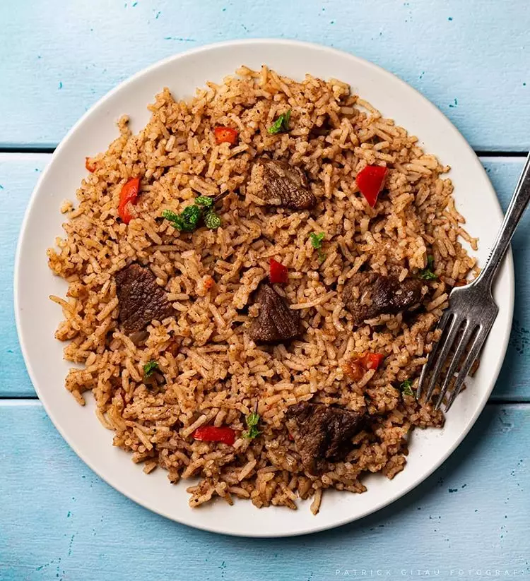

BEEF PILAU RECIPE

This is a mixture of rice and beef (meat)
Ingredients
- 2 cups of Rice
- 2 red onions, chopped
- Pilau masala
- 3 cloves garlic, grated
- 1 tablespoon ginger, granted
- cooking oil
- 1 tablespoon cloves
- 2 tablespoon cumin seeds
- bay leaves
- tomato paste
- salt
- ¼ cup fresh cilantro roughly chopped
- 6 cups of meat broth
Preparation
- Using a sufuria, heat oil and then add the onions. Fry until the onions start to turn golden brown
- Add garlic and ginger, and stir until fragrant.
- Add the meat, pilau masala, bay leaves, cilantro, and salt to taste. Cook until the meat browns and caramelises.
- Add the blended tomatoes or tomato paste and stir occasionally for about 4 minutes.
- Add the meat broth and cook for 8 to 10 minutes bringing to a boil.
- Stir in the washed rice, and cover tightly with aluminium foil paper (to keep the steam in) if necessary.
- Reduce the heat to low and cook for 20 minutes until the rice is cooked and all the liquid is absorbed.
back to main page